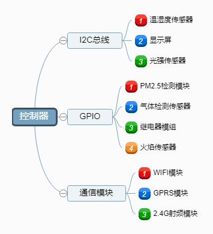
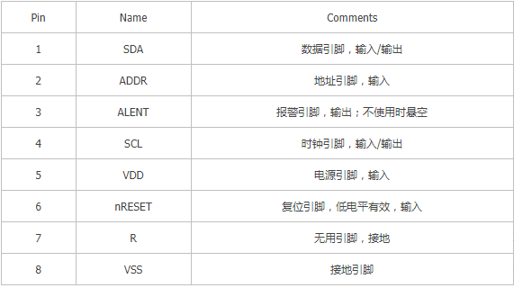
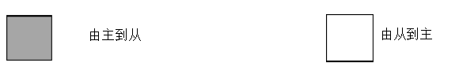
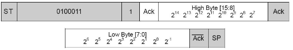
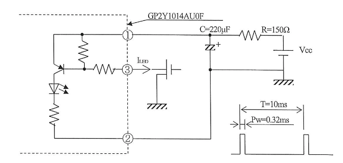
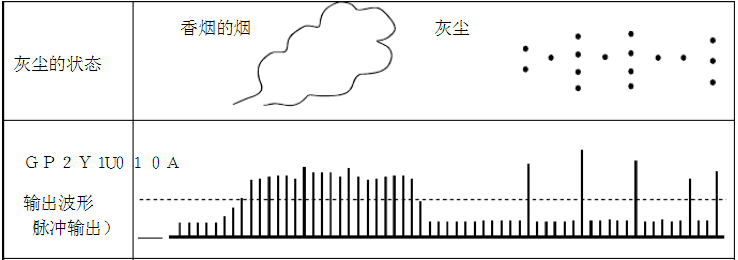
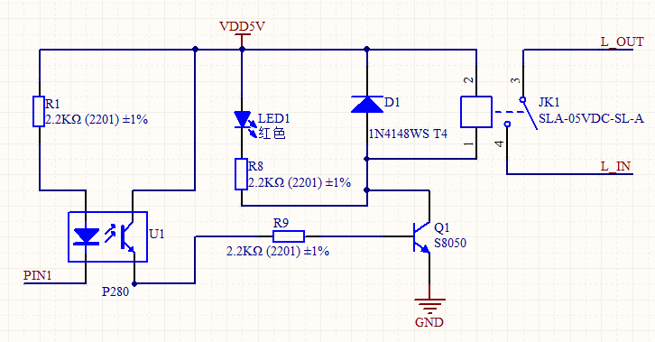

硬件平台设计
硬件平台设计
2.1 硬件平台框架设计
硬件平台搭建可以简单的分为三大部分：控制器，外围设备，以及驱动电路。控制器是硬件电路的核心，主要工作是与外围设备进行数据通信，控制设备运行状态。外围设备通常为传感器，显示器件，特殊功能芯片。驱动电路可以理解为控制器与外围设备连接的桥梁，只有当硬件电路满足外设驱动标准，再按照特点的通信协议编写控制程序，才能实现控制器与外围设备间正常的数据通信。

2.1.1 控制方案
控制器通过I2C总线与温湿度传感器，OLED显示屏，光强传感器连接，通过I2C协议读取控制。对于一些输入输出为数字量或者模拟量的外围器件，则通过控制器的通用输入输出接口与之相连。这类器件通常为MQ系列的气体传感器，光耦驱动的继电器模组，红外灰尘传感器，火焰传感器等。作为一款物联网设备，硬件层要求必须具备局域网或广域网通信的能力，常见的通信模块有乐鑫的ESP8266 WIFI模块，GPRS 移动通信模组，2.4G射频模块（lora，zigbee等）。针对于不同的控制场合，充分考虑系统成本、控制需求，在控制器的选型上进行优化，得到两种方案。
- 方案一：使用STM32单片机作为控制器，主要优点是控制管脚多，可外接设备丰富。缺点是硬件成本相对较高，在控制点数较少的场合，会造成硬件资源浪费。
- 方案二：使用ESP8266系列WIFI模组作为控制芯片，ESP8266系列模组是款高度集成的WIFI SOC(片上系统)解决方案，通过编程可以同时兼顾I/O控制和wifi数据传输，适用于控制点数较少的场合，且价格便宜。缺点是可供使用的I/O引脚数量与STM32芯片相比要少的多，不能满足大规模，多控制点位场合的控制。
2.1.2 控制器选型
- （一）STM32F103C8T6
STM32F103C8T6是一个32位微控制器，采用哈佛结构设计，拥有单独的数据、指令总线，使得数据访问与取指能够同时进行，极大的提升了性能。芯片内部提供了多条总线接口，并且都可以并行工作，指令总线和数据总线共享同一内存空间。为了适应复杂应用对存储空间的需求，STM32F103C8T6 提供一个可选的 MPU，而且在需要的情况下也可以使用外部的 cache。 - （二）ESP8266
ESP8266-12f集成了 32 位 Tensilica 处理器、有标准数字输入输出接口、天线开关、射频 balun、功率放大器、低噪放大器、过滤器和电源管理模块等，内置的 Tensilica L106 32 位 RISC 处理器，CPU 时钟速度最高可达 160 MHz，支持实时操作系统 (RTOS) 和 Wi-Fi 协议栈。 ESP8266模组是款高度集成的WIFI SOC(片上系统)解决方案，通过编程可以同时兼顾I/O控制和wifi数据传输，适用于控制点数较少的场合，且价格便宜， 具有的省电模式适用于各种低功耗应用场景，并且工作温度范围大，能够保持稳定的性能，能适应各种操作环境。2.1.3 传感器选型
#####（一）温湿度传感器
瑞士Sensirion 数字温度传感器SHT30建立在全新和优化的CMOSens® 芯片之上，进一步提高了产品可靠性和精度规格。SHT30提供了一系列新功能，如增强信号处理、两个独特和用户可选I2C地址、一个可编程温湿度极限的报警模式，以及高达1 MHz的通信速度.

通过改变选择ADDR引脚的电压，实现传感器的地址改变。默认地址是ADDR连接VSS时（ 0X44），可以修改成0X45。 SHT30工作模式如下： - （1）单次数据采集模式:
不同命令，在重复性(高，中，低）和时钟延伸(禁止，使能）方面不同，每个数据包含一个16位温度和一个16位湿度值（按此顺序）组成。
传输过程如下所示：
STM32发出START，并发出I2C的地址（7位）+读（1）/写（0）标志位，然后等待SHT30的ACK。
发出命令高8位数据，等待SHT30的ACK。
发出命令低8位数据，等待SHT30的ACK。
STM32发送STOP停止通信。
STM32发出START，并发出I2C的地址（7位）+读（1）/写（0）标志位，然后等待SHT30的ACK。
传感器将接收读头的接收，并发送两个字节的数据（温度），接着是一个字节的CRC校验。
传感器发送两个字节的数据（相对湿度），然后是一个字节的CRC校验和。每发送8位必须接受到STM32回应的ACK条件传感器才会继续发送数据。如果传感器没有接收到ACK，它就不会继续发送数据。 - （2）周期性数据采集模式:
不同命令，在重复性(高，中，低）和数据采集频率((0.5, 1, 2, 4 & 10 mps ）方面不同，每个数据包含一个16位温度和一个16位湿度值（按此顺序）组成。测量数据的传输可以通过获取数据命令来启动。在读取命令获得数据之后，数据存储器被清除。（二）照传感器
BH1750FVI基于I2C通信协议的数字型光强度传感器。光强采集范围：1-65535lx，采用标准的I2C总线传输方式，BH1750读取方法：通电、设定模式、等待测量、读取数据光照强度=（读取值分辨率）/（1.2灵敏度）。单片机通过I2C总线向传感器发送起始信号，并向传感器发送设备地址和写信号，发送完毕，主机等待传感器应答，然后主机向从机发送内部寄存器地址，主机等待传感器应答，主机向从机发送停止，时序为：

(1)发送“连续高分辨率模式”指令
(2)等待第一次连续高分辨率测量（最大时间为180ms）

等待完成第一次的测量（最大时间180ms），然后读取测量结果，读取BH1750的16位数据，数据为高位和低位，过程为单片机通过I2C总线向传感器发送起始信号，并向传感器发送设备地址和写信号，发送完毕，主机等待传感器应答，然后读取高位数据（15:8），并发送应答，读取高位数据（7:0），不向主机发送应答，主机停止发送信号，采集过程结束。
（三）粉尘传感器
GP2Y1014AU粉尘传感器是夏普公司开发的一款光学灰尘监测传感器模块，在其中间有一个大洞，空气可以自由流过，它里面邻角位置放着红外发光二极管和光电晶体管，红外发光二极管定向发送红外，当空气中有粉尘经过坚持区域时，红外光发生漫反射，光电晶体管接收到红外光后，会使信号输出引脚电压发送变化，通过读取电压信号，从而可以计算出粉尘浓度。其属性值如下；
供电电压：5-7V
工作温度：-10-65℃
监测最小直径：0.8μm
灵敏度：0.5V/（0.1mg/m3）灰尘浓度每变化0.1mg/m3，输出电压变化0.5V。
驱动条件：模块需要外接220uf电容，150R电阻来搭建驱动电路，电路图如下所示； LED驱动周期为10ms，LED驱动时间即脉冲宽度为0.32ms，采用时间为0.28ms，输出电压会根据单位时间通过过孔的粉尘浓度产生相应变化。

灰尘和烟的判别方法：根据输出电平持续的时间和电平大小变化，可以推断出检出对象。通常情况下，烟是细微粒子，密度高，会扩散式的大范围漂移。而灰尘相对来说是一个个大的颗粒，密度要比烟低，会断断续续的经过灰尘传感器的检出区域。烟的检出电压表现为连续的高电压，而灰尘的检出电压表现为间断性的高电压。因此，只需读取一段时间内灰尘传感器的检出电压，即可通过电压趋势来分辨出污染程度，以及主要的污染物。

（四）气体传感器
气体传感器选用MQ-2系列传感器模块。MQ-2可以检测天然气、液化石油气、烟雾、酒精等，对烷烃和烟雾最敏感，模块可以输出数字信号和模拟电压，直接与单片机相连，通过调节模块上的可调电阻，可以改变输出数字信号的阀值。传感器采用二氧化锡半导体气敏材料，通过内部发热丝加热，处于200摄氏度到300摄氏度之间时，二氧化锡与空气中氧气结合，形成负离子吸附，使半导体电子密度减小，导致电阻阻值增加。晶体颗粒间界处的势垒受到烟雾浓度而变化，从而引起表面导电率变化，浓度越大，电阻越低，导电率越大，输出的模拟信号也越大。
（五）火焰传感器
远红外火焰传感器模块，用于检测室内是否存在明火，探测灵敏度可旋转可调电阻来改变，对于760~1100纳米范围内的光源比较敏感，使用5v直流电源供电。可输出数字信号和模拟信号，可直接与单片机相连，实际使用过程中应尽量远离火源安装，防止高温损毁模块，且尽量避开阳光，实际测试时发现太阳光对其影响较大。
2.1.4 执行机构选型
本设计主要控制量为开关量，控制的设备为250v 10A以下的家用电器，所以选用继电器或继电器模组作为控制器的执行机构，继电器选用松乐SRD-05VDC-SL-C 继电器，控制端电压5v，额定电流71.4 mA，输出端可接AC 250v 10A、DC 30v 10A以下的设备。继电器是一种可控的开关器件，通常应用与二次回路，继电器主要特性是用小电流小电压控制大电流大电压，因此,用于高电压大电流负载的开关控制，起到隔离保护的作用。继电器的主要工作原理是利用电磁效应，通过给线圈通电，产生磁力吸引衔铁，使得衔铁上的动触点与静触点接触，达到开关控制的效果。

由于stm32，esp8266控制芯片管脚输出电压为3.3V，继电器控制电压为5V，所以需要进行电压匹配。单片机控制光耦PIN1引脚，光耦输出端通过2.2k电阻与s8050三极管基极相连，三极管串联在继电器控制回路中，通过控制三极管控制继电器的导通和关断。